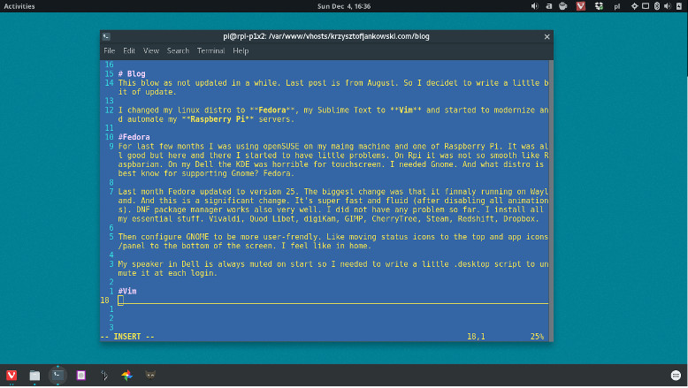

Fedora 25, Learning Vim and maintaining Raspberry Pi Servers

Blog
This blog was as not updated in a while. Last post is from August. So I decided to write a little bit of update.
I changed my linux distro to Fedora, my Sublime Text to Vim and started to modernize and automate my Raspberry Pi servers.
Fedora
For last few months I was using openSUSE on my maing machine and one of Raspberry Pi. It was all good but here and there I started to have little problems. On Rpi it was not so smooth like Raspbarian. On my Dell the KDE was horrible for touchscreen. I needed Gnome. And what distro is best know for supporting Gnome? Fedora.
Last month Fedora updated to version 25. The biggest change was that it finnaly running on Wayland. And this is a significant change. It's super fast and fluid (after disabling all animations). DNF package manager works also very well. I did not have any problem so far. I install all my essential stuff. Vivaldi, Quod Libet, digiKam, GIMP, CherryTree, Steam, Redshift, Dropbox.
Then configure GNOME to be more user-frendly. Like moving status icons to the top and app icons/panel to the bottom of the screen. I feel like in home.
My speaker in Dell is always muted on start so I needed to write a little .desktop script to unmute it at each login.
Vim
Oh Vim. I learn how to quit years ago. I even know how to switch to edit mode and get back. And that was my whole knowleage over the years. And week ago I decided that it's time to change this.
I bought a little pocket book with all the sortcuts. I wached few essential videos on YouTube. And then I started to read vimtutor. And after few days I get hooked.

Vim is perfect. I still can not use it in work with our huge project but at home I don't even have Sublime installed. And I do not want to anymore. I can do all the cool things in Vim. Some times it's hard but because I don't know how not because of Vim.
I have Vortex Pok3r keybard that is a perfect companion with Vim. I has [ESC] quite easy to reach and - the best part - it has arrows as IJKL. Almost like Vim but in normal position (triangle). So I do not need to force myself to learn HJKL. I tried and kinda can use it but why if I have the better option?
I always loved distraction free editors mode. In Vim it's always distraction free :) Also I use Vim to code my little Python aplications and this blog!
There is a long road to go before I become a fluid Vim user. But I like to learn and be more and more productive thanks to it.
It will be a fun time.
Raspberry Pi Servers

My little server grows. From one Pi that serves everything to three units. It's still not perfect but for now it looks like this:
- main Pi (the one in the jar) for all P1X websites and reverese proxy to another Pi
- secondary Pi that is a clone of the main Pi just for redundancy
- third one for that serves proxy domain
I have 3 commercial websites and one Pi with domain that are my collegue. I rented him (for free) space, power and fast internet connection. It becomes serious.
I have one more Pi but I don't have any free ethernet ports in router nor power adapters for it. That's why I bought switch (8 ports) and nice powered USB hub (8 ports) along with 2.2A usb cables. They shoudl get to me sometime next week.
I need to write some scripts to automaticly synchronize /www/ between those two main and backup Raspberry Pi's. And then decide what to do with the last one that for now is waiting for power. It's the latest Pi 3B. It has 4 cores. What can I do to use them?
Tags: vim, linux, raspberry-pi